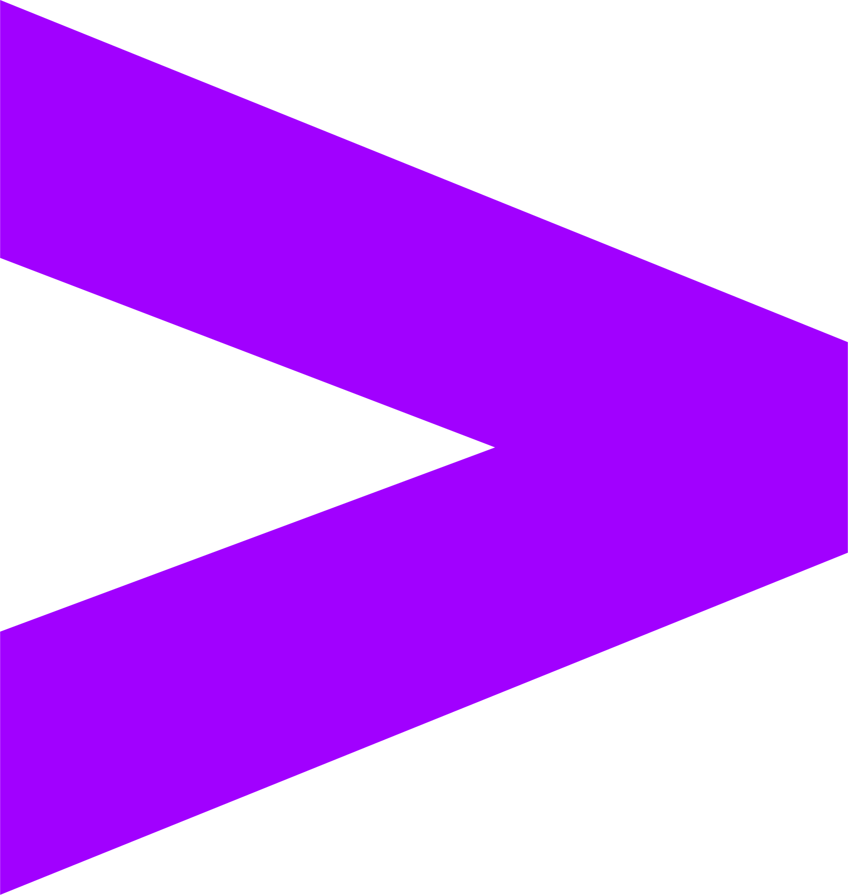

Mastercard
Site Relability Engineer 1
January 2026 - Current
Member of Mastercard's Global Clearing Management Systems, supporting the accurate clearing of 500M+ daily transactions across a network that processed $10.6 trillion in gross dollar volume in 2025, serving 3.39 billion active cardholders worldwide.
Key Responsibilities
- Architecting and maintaining CI/CD pipelines to enable high-frequency, low-risk deployments across distributed mainframe and cloud environments — driving DevOps transformation and infrastructure-as-code practices at planetary scale across 210+ countries, multiple regulatory jurisdictions, and 24/7 zero-downtime SLA requirements, underpinning an estimated 197 billion transactions processed annually
- Leading change management and release governance across mission-critical mainframe systems, ensuring stability and compliance across PCI-DSS, ISO 20022, and global regulatory frameworks
- Bridging mainframe modernization with cloud-native DevOps practices, integrating legacy COBOL and z/OS environments into modern CI/CD pipelines without compromising the throughput and reliability that global payments demand
Maritz
Asset Manager Intern
May 2025 – Aug 2025
Optimized IT asset management processes using ServiceNow, projecting $20,000+ in annual savings through automation.
Key Achievements
- Optimized logistics through process automation and system optimization to reduce asset loss and operational costs, projecting $20,000+ in annual savings with a 156% return on investment (ROI)
- Established ServiceNow specifications and workflow automation requirements for seamless data flow between ServiceNow platform, ShipEase CORE plugin, managing 6,000+ assets across the company
University of Missouri
AI Student Researcher
Feb 2025 – Dec 2025
Building RAG systems and AI infrastructure for VR applications, developing Flask APIs with ChromaDB and OpenAI integrations.
Key Achievements
- AI Infrastructure: Engineered Flask-based RAG API server with ChromaDB vector database integration, OpenAI API's, serving domain-specific LLM responses to VR lab application via RESTful endpoints with Docker and Tailscale on the Nvidia Jetson for 20+ users
- Data Modeling: Built end-to-end document processing pipeline using Unstructured library for multi-format parsing (PDF/DocX/PPT), implementing semantic search, context extraction and OpenAI embedding model integration achieving 95% accuracy
- RAG System Architecture: Designed automated eval framework as LLM judge with ground-truth datasets to measure retrieval accuracy, response latency, and hallucination rates with average response times of 1.8 seconds, with 90% of all requests under 3 seconds
University of Missouri
Analysis Researcher
Feb 2024 – Aug 2024
Analyzed 2,000+ data points from voice and biometric data using AWS, contributing to personalized treatment insights for medical professionals.
Key Achievements
- Technical Analysis: Evaluated and analyzed over 2,000+ data points from voice and heart rate data using AWS, contributing to visualizations that directly informed the development of personalized treatment plans by medical professionals
- App Testing: Conducted UX non-functional and functional testing, identifying 45+ critical bugs to developers, maintaining application stability for 20+ users in a CI/CD environment
- Documentation Initiative: Developed over 5,000 words of technical documentation and produced onboarding video training materials, establishing standard reference materials for current team members and future contributors
University of Missouri
Teaching Assistant
June 2024 – Dec 2025
Assisted 250+ students across multiple CS courses including Python for ML, Software Engineering, SQL, and C# Programming.
Key Achievements
- Assisted 250+ students across multiple computer science courses
- Graded assignments for Python for Machine Learning, Software Engineering, SQL Database Systems, and C# Programming
- Provided one-on-one tutoring and debugging support for complex programming concepts
- Facilitated peer learning sessions to reinforce course material and best practices

Accenture Federal Services
Apprentice in Training - Java
June 2022 – Aug 2022
Implemented Java software components in an agile development pipeline with CI/CD practices for federal government projects.
Key Achievements
- Implemented Java software components in an agile development pipeline with CI/CD practices
- Collaborated with senior developers to deliver reliable code for federal government projects
- Participated in daily stand-ups and sprint planning meetings following Agile methodology
- Gained hands-on experience with version control and automated testing frameworks